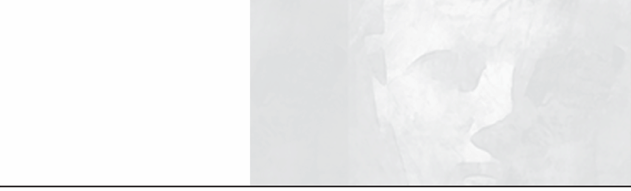

Psychiatric medications are not only dangerous to take on a regular basis, but they also become especially dangerous during changes in dosage, including dose reduction and withdrawal. Psychiatric Drug Withdrawal: A Guide for Prescribers, Therapists, Patients, and Their Families is intended to provide the latest up-to-date clinical and research information regarding when and how to reduce or to withdraw from psychiatric medication.
This book describes a person-centered collaborative approach and is intended as a guide for the entire collaborative team. The team includes prescribers (psychiatrists and other physicians, physician’s assistants, and nurse practitioners) and therapists (social workers, psychologists, counselors, marriage and family therapists, occupational and recreational therapists, nonprescribing nurses, and others). It also includes the patient and the patient’s family or significant others.
The guide begins with reviews of adverse drug effects that may require drug reduction or withdrawal. It then discusses withdrawal effects for specific drugs to familiarize clinicians, patients, and families with these problems. However, no book can substitute for informed professional guidance during the withdrawal process. It cannot address the nuances of an individual case or cover all the possible hazards of taking or withdrawing from psychiatric drugs. Health professionals, patients, and their families are urged to inform themselves from as many sources as possible, and patients are encouraged to seek the best possible professional guidance in deciding whether or not to withdraw from psychiatric medication and how to go about it.
Although this book focuses on medication reduction and withdrawal, the person-centered collaborative approach is also a model for helping children, dependent adults, adults who are emotionally or cognitively impaired, and the elderly, as well as those going through psychiatric medication withdrawal. It’s the soundest approach whenever the individual needs more guidance and help than what is available in one-to-one autonomous psychotherapy.
Because it presents a person-centered collaborative approach that involves patients and their families, the information needs to be user friendly to nonprofessionals. Therefore, generic names will sometimes be interchanged with or accompanied by familiar trade names.
I have written this book for the spectrum of prescribers, including those who have a much more favorable view of psychiatric medications than I do. Therefore, at times I make recommendations for dose reduction or the use of minimal medication when in my own practice I would not be using medication at all. I continue to believe and to practice on the principle that psychiatric medications do more harm than good, and in my own practice, I rely upon individual, couples, and family therapy without starting patients on psychiatric drugs (see Breggin, 2008a and 2008b).